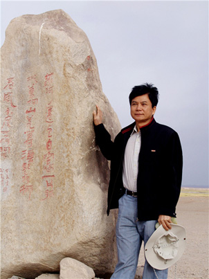

关仕京 汉壮双语“迁徙”者
来源：中华儿女报刊社

中国民族语文翻译局大院内，在前往会议室的路上，关仕京一边走一边说，“很多人说我们这里很安静，是的，的确是。安静，代表着来往的人少，也表示这是个清贫的单位。”他笑笑，接着说，“但是搞翻译，做研究，最需要这样清静的环境。”
他常驻广西南宁市，每年一度的全国“两会”，五年一次的全国党代会和其他重要会议，以及翻译局有重大活动的时候，他会来北京。他与翻译局的同事们都很熟，间或有同事迎面遇上，“老关，你来北京了？能呆多久？有空了去坐坐。”寒暄温暖而亲切。
工作单位在北京，人在外地，这是翻译局彝、壮文室特有的情况。尤其是像关仕京这样，翻译局的元老们，长期生活在本民族聚集地，更有利于工作和研究。然而，他们又是翻译局的骨干，每到重要时刻，又需要他们，因此，关仕京就过起了“候鸟”般生活，每年春季必定要飞到北京，体会着“双城”生活。
做更有意义的事
“我一辈子都在与教育和翻译打交道。”关仕京脸上带着朴素的笑，“我蛮喜欢我的工作和生活的。”
出生于1955年的关仕京，在上中小学阶段，遇上了“文化大革命”，那个以交白卷当英雄的年代里，很多人因此而荒废学业，关仕京因为爱好读书，尽管学校有一搭没一搭地开课，但是自学的习惯一直保持了下来。高中毕业后，他在本地做了一名普通的民办老师，参加工作的那一年，他才17岁。当恢复高考的消息通过广播一级级传播到他所在的武鸣县的一个小乡村时，离高考只有一个多月了，他觉得，这是一个难得的机会，就白天给学生上课，晚上拿起书本，捡起那几本内容肤浅的初高中课本，匆匆忙忙地复习一阵子后，他考入了广西南地第一师范学汉语专业。
毕业后他继续教师的工作，在自治区首府南宁市安吉中学教汉语文。从小到大，关仕京一直学的是汉文。但因为他生活在壮族人民聚居地，在上学之余，他所接触的都是壮族文化，生活中都是用壮语交际，所以，他从小就有很好的“汉壮双语”基础。
关仕京做事勤勉认真，当老师的几年间，他的授课深受学生和校领导的认可，曾经获评“南宁市先进教育工作者”称号，年纪轻轻，学校就让他担任校副教导主任。如果人生不出现偶然，他或许会在教师这一领域深耕一辈子。
改变人生轨迹的往往是不起眼的偶然——一天午休，与往常一样，他从食堂打了饭，和同事们聚在学校的阅览室内，一边吃饭一边聊天，这是一天中最轻松的时刻。吃完午饭，他随手抽出一份《广西日报》看，正好看到中国民族语文翻译局招聘翻译人才的消息。他的心“砰砰”快速跳动了两下——要求壮语汉语都熟练，他不就很适合吗？而且，做翻译，能更好地传承、保护、弘扬、推广本民族的文化，多么有意义的工作啊！他默默地记住了招聘报名考试的时间和地点，满怀憧憬地去应聘。
因为他之前没在学校学过壮文，这次应考前只有一周时间学习，壮文笔试成绩很不好。但壮语口试的时候，考官拿出一份文件，他随即准确、流利地口译出来，成绩让考官刮目相看，很是惊喜。只是他的壮文笔试……考官有些犹豫。他对考官说：“给我个把月时间，我定能熟练使用壮文。”这不是夸口，壮语只有26个字母、22个韵母、108个韵母、8个声调，掌握了规律，特别好懂，再加上他汉壮语功底扎实，又有很好的阅读能力和口译能力，壮文拼写在一周内就已经掌握了，看他有如此好的汉壮双语基础，翻译局的考官给他送去了橄榄枝。
然而学校不放人，学校认为关仕京是难得的人才，不愿意他走，年轻的副教导主任，未来前景光明，学校苦口婆心挽留。可是翻译局的工作是关仕京更想做的，“汉语人才南宁市有大把，但汉壮双语都过硬的人不多”，他铁心要求走。学校搬出了“杀手锏”，让教育局留住他，并答应他，可以调入教育局工作，这是当时很多教师梦寐以求的工作机会。然而一心向往从事民族语文翻译的关仕京还是拒绝了，几经周折，历经长达大半年的调动，终于在1986年年底，完成了所有调动手续，他成为翻译局的一员。
“后来我也想了，为什么当初翻译局对我诱惑力那么大呢？”关仕京说，“翻译，就是两个语言之间的沟通交流，不论是汉语还是壮语，都有着博大精深的文化，如果能通过翻译，让更多的人认识了解彼此的语言，了解彼此的文化，是一个多么有意义的事情啊！”“意义”是关仕京所看重的。
第一次担当同声传译
1987年3月24日，当我们同声传译队伍乘坐的面包车，缓缓停在人民大会堂东门时，我的内心真是既高兴又紧张。因为壮族人民热切企盼壮语早日进入人民大会堂的夙愿，等会儿就要实现了，我怎能不高兴啊！又因为，我将第一次踏进雄伟而庄严的人民大会堂，第一次用壮语现场传译领导人的重要讲话，让壮语第一次荡漾在大会堂里，让壮族的政协委员，第一次在大会堂通过母语聆听领导的重要讲话。面对诸多的“第一次”，我能否顺利完成同传任务，心里没底，着实有点紧张！
……
离大会开幕还有15分钟时，我就进入壮语同传室，摆好壮文文件，戴上耳机，调好话筒，准备“战斗”。“心口呀莫要这么厉害地跳！”贺敬之的诗句似乎在提醒着我。
忽然，大会堂里爆发出一阵雷鸣般的掌声，整个会场沸腾起来了！我赶紧往主席台一望，只见党和国家领导人正微笑着走上主席台。一会儿，大会主持人发令：“请全体起立！奏国歌！”我立即用壮语作同声传译。国歌高奏之后，大会主持人就宣布政协大会开幕，先请全国政协主席邓颖超讲话，我也立刻用壮语作同声传译。开头我确实有点紧张，语言不够流畅，但我局龙日老师的教诲忽地在耳边响起：“‘领导人’讲话嘛，大家都听你的”！我就排除杂念，放松自己，稳定情绪，大胆传译，语句也就自然多了。邓主席的讲话节奏分明，言简意赅，通俗深刻，充满激情，振奋人心。我也能有板有眼、声情并茂地传译出来，并通过电缆，传送到代表、委员席座的如意风上。壮语准确、精辟、生动的表现力，总算在大雅之堂经受了考验！我终于顺利地完成了同传任务，我成功了！
如上这些文字选自关仕京的文章《我的第一次同声传译》，再也没有比他自己的回忆更为生动的了。刚刚进入翻译局三个多月，就开始承担同声传译这样高难度的工作，还好，一切顺利，这是壮语首次回荡在人民大会堂，这让关仕京无比自豪和激动。他再一次觉得，这份工作的“意义非凡”。
他成为从壮乡走出来的第一个翻译家。
除了承担每年全国两会的同声传译工作，他还参与了翻译局大量的马列经典著作和重要文献的翻译、审定译稿工作。他认为自己的文化水平还有待进一步提高，于是拿出了高考的那股子劲儿，他又考入广西民族大学学中国文学专业、在华东师大研究生班学文艺学专业，文化视野得到进一步拓展。同时他又加强了翻译理论、翻译技巧的学习。因而翻译定稿工作很快就得心应手了。他以几十年如一日的敬业精神，前后参加了《毛泽东著作选读》《毛泽东选集》《邓小平文选》《江泽民文选》《资本论》的审定译著；《马克思恩格斯文集》等经典著作的翻译、审定译稿工作。独立审定的代表著作有《资本论》第二卷（壮文版）、《马克思恩格斯文集》（第六卷）、《江泽民文选》第一卷（壮文版）等等。在大部头的译著中，他从初译，到初审，到复审，到终审，业务能力与水平也在不断精进。2009年，国家民委对中国民族语文翻译局进行了一次人事改革，确定翻译职级。关仕京以自己丰富的翻译经验和过硬的翻译技能，被评定为国家二级译审，2004年享受了政府特殊津贴。
致力于壮族文化的研究和推广
“壮族有十分丰富的民族文化，等待着去挖掘，去传承。”关仕京在翻译局工作之余，将业余时间都投注到壮族文化的研究中去了，他没有其他特别的爱好，最大的爱好就是到壮族民间采风，去探访壮族文化里原汁原味的东西，那些散落在民间的文化瑰宝，他通过专业的翻译、编撰、考究，让他们成为研究壮族文化的宝贵资料。
关仕京对壮族的歌圩很感兴趣，“壮族人爱唱歌，高兴了，悲伤了，相爱了，都要通过歌声来表达，因此，唱歌成为我们生活中很重要的一部分。”关仕京说，“在广西，有的地方每年会有歌圩节，都会吸引很多人参加。”关仕京从最初的感兴趣到慢慢地开始做研究，他通过大量走访，记录下民间的歌声，很多壮歌代代相传，已经成为壮族文化中的DNA，通过研究整理，他出版了《象州歌谣》《壮族传统对唱恋歌》《壮族四大悲歌》（合著）等相关书籍，并撰写了《壮族民歌的审美透视》《瑰丽壮歌给当今社会带来的巨大效益》《壮族民歌中的民俗基因》等论文，将民歌这一民间作品上升至一种文化形态的研究。
他还对流传在壮族聚居地的师公文化感兴趣，近年来，做了大量的这方面研究。“师公，你了解吗？”他用笔认真地在纸上写下这两个字。为什么对他们感兴趣呢？他发现在师公经书里，储存着很多古壮语。经年积累，他出版了《壮族师公二十四孝经书》（译注）。
对于古壮字的研究，关仕京一直都有强烈的兴致。早在1000多年前，壮族人民就根据汉字的偏旁、部首和语音、语义，创造了古壮字（方块壮字）。宋•范成大《桂海虞衡志》载：“边远俗陋，牒诉券的，专用土俗书，桂林诸郡皆然。”民间传说、山歌、戏剧如《布伯》《刘三姐》《百鸟衣》《侬智高的故事》等，都是用古壮字抄写留存下来，给中华民族留下了弥足珍贵的历史资料和文化财富。关仕京在古壮字领域研究多年，撰写了很多相关论文，他对壮族先民用古壮字抄写流传下来的壮族传统剧作，有较深的研究，翻译出版了由他主编并审定的《中国壮剧传统剧作集成》（合著），并发表论文《壮剧传统剧作翻译琐谈》。
此外，他还参与了《射雕英雄传》、《西游记》等电视连续剧台词的翻译工作，其中一部还在2006年获得了全国民族语电视节目译制片类的金奖。当年，他看到乡亲们听不懂汉语电视节目而揪心、难过。而今，他通过翻译，给家乡的千家万户送去壮语版的电视剧，也算是了却了这份心愿。
翻译，是有意义的事情，他说，因为翻译，可以让理论名著获得在另外一个语言的无缝沟通，翻译可以让壮族文化被更多人知晓，也因为翻译，可以让壮族人享用到更多的其他民族的文化大餐。而他内心深处，更是有一个使命，壮族文化源远流长，丰富美丽，他要用更多的形式将他们记录下来，让壮族文明长久地活在历史中。（记者/王海珍）